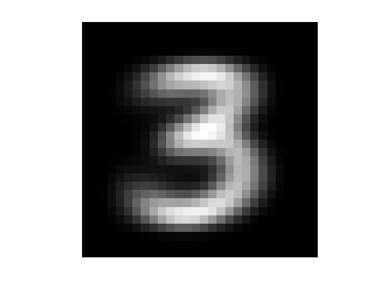

Introduction
In this assignment, we will attempt a classic pattern recognition problem. Given a dataset consisting of images of handwritten digits, the goal is to implement an algorithm that correctly labels each image with the correct digit classification (0 to 9).
Contents
- Getting started
- Dataset
- Part 1: The Centroid method
- Step a: Calculate the distance between the means and the test image
- Step b: Classify the test set of digit
- Step c: Report the success rate (correct/total) of each digit
- Part 2: The PCA Method
- Step a: Find the principal components of the training set
- Step b: Test and report the success rate
Getting started
- Read the first few pages in the chapter on "Classification of Handwritten Digits" available on Canvas under Files for background on this problem.
- Download the dataset 'mnistdata.mat' and the scripts 'mnistdata_upload.m' and 'viewdigit' from the assignment page
- Start with the 'mnistdata_upload.m' script and keep modifying it as we guide you through the steps.
% The MNIST databse of handwritten digits -- % Yann LeCun -- NYU % Corinna Cortes -- Google % Chris J. C. Burges -- Microsoft Research clear; load mnistdata; % Visualize a selected train/test digit figure(1) n = 6; for i = 1:n*n digit = train8(i,:); %digit = test8(i,:); digitImage = reshape(digit,28,28); subplot(n,n,i); image(rot90(flipud(digitImage),-1)); colormap(gray(256)); axis square tight off; end % Visualize the average train digits T(1,:) = mean(train0); T(2,:) = mean(train1); T(3,:) = mean(train2); T(4,:) = mean(train3); T(5,:) = mean(train4); T(6,:) = mean(train5); T(7,:) = mean(train6); T(8,:) = mean(train7); T(9,:) = mean(train8); T(10,:) = mean(train9); for i = 1:10 digitImage_mean(:,:,i) = reshape(T(i,:),28,28); end figure(2) for i = 1:10 subplot(2,5,i) image(rot90(flipud(digitImage_mean(:,:,i)),-1)); colormap(gray(256)); axis square tight off; end


The first figure above gives a sample of different instances of digit 8 in the data matrix 'train8'. The second figure shows the average of all the 0 digit instances, the average of all the 1 digit instances, the average of all the 2 digit instances and so on.
Dataset
- The data is separated into two categories, training and testing.
- Each category contains 10 sets of digits from 0-9. For example, as shown below the training set train5 contains 892 instances of digit 5, and the test set test8 contains 974 instances of digit 8.
- Each 784-by-1 row vector is a 28-by-28 image.
whos('-file','mnistdata.mat')
Name Size Bytes Class Attributes test0 980x784 768320 uint8 test1 1135x784 889840 uint8 test2 1032x784 809088 uint8 test3 1010x784 791840 uint8 test4 982x784 769888 uint8 test5 892x784 699328 uint8 test6 958x784 751072 uint8 test7 1028x784 805952 uint8 test8 974x784 763616 uint8 test9 1009x784 791056 uint8 train0 5923x784 4643632 uint8 train1 6742x784 5285728 uint8 train2 5958x784 4671072 uint8 train3 6131x784 4806704 uint8 train4 5842x784 4580128 uint8 train5 5421x784 4250064 uint8 train6 5918x784 4639712 uint8 train7 6265x784 4911760 uint8 train8 5851x784 4587184 uint8 train9 5949x784 4664016 uint8
In this project, we investigate two ways to classify an image, centroid method and PCA method.
Part 1: The Centroid method
Step a: Calculate the distance between the means and the test image
The following code takes a digit from the testing set and computes the 2-norm distances between this digit and the 10 average train digits computed above.
z = double(test7(55,:)); dist = zeros(10,1); for k=1:10 dist(k) = norm( z - T(k,:) ); end dist
dist =
1.0e+03 *
2.4099
2.0790
2.0986
1.9529
1.9810
1.9689
2.1937
1.5645
1.9331
1.6696
Since the 2-norm distance between unknown digit and the average train digit 7 is smallest, our simple classification algorithm will label unknown digit as '7' which is indeed the correct answer.
Note also that average train digit 7 is actually T(8,:) because MATLAB indexing starts at 1.
Step b: Classify the test set of digit
Task 1: Write a function that takes as inputs:
- an n-by-784 matrix A containing n digits
- a 10-by-784 matrix T containing the average train digits
and ouputs:
- an n-by-1 vector containing the labels (0-9) for digits in A.
Step c: Report the success rate (correct/total) of each digit
Task 2: Classify the entire test set and report the success rate of each digit.
Part 2: The PCA Method
The PCA method attempts to identify characteristic properties of each digit, based on the training data, and compares these properties with those of the test digit in order to make an identification. Here, the characteristic properties are the principal components extracted from the training set.
Step a: Find the principal components of the training set
Find the first 5 singular vectors of the transpose of train3.
[U3,~,~] = svds(double(train3'), 5) ; size(U3)
ans = 784 5
These five singular vectors represent the five dominant chracteristics of the digit '3'. They also form an approximate basis for the space of all possible digit 3's.
viewdigit( U3(:,1) ); viewdigit( U3(:,2) ) ;
We can test how well a digit  can be represented in this basis of digit 3 by solving the least square problem:
can be represented in this basis of digit 3 by solving the least square problem:
which has the solution:
Now that we have a way to measure how far away an unknown digit is from 'looking' like digit 3, let's do the same for all digits 0 to 9. We generate approximate bases for all ten digits in this way:
basis_len = 5; Us=zeros( 28*28, basis_len, 10); for k=1:10 % go through each digit 0 to 9 s = strcat('train',num2str(k-1)); A = double(eval(s)); % and get first 5 singular vector of A transposed [U,~,~] = svds( A', basis_len ); Us(:,:,k)=U; end
The essence of this PCA approach is that for a given unknown digit (say, test4(15,:)) we compute this number
for all digit from 0 to 9 and choose 's label based on how well are represented by approximate bases . We give the label 3 for example if
gives the smallest number. Let's try that on a test digit:
z = double(test4(14,:))'; dist = zeros(10,1); for k=1:10 Uk = Us(:,:,k); dist(k) = norm( z - Uk*(Uk'*z) ); end dist
dist =
1.0e+03 *
2.1859
2.1720
2.1305
2.1573
1.4873
2.1208
2.0254
1.9824
1.9618
1.7316
Since test4(14,:) is best represented by the approximate basis of digit 4 (this is indicated by the smallest number). It gets labeled with '4' which is the correct answer!
Task 3: Write a function that takes as inputs:
- an n-by-784 matrix A containing n digits
- a 784-by-5-by-10 matrix T containing the first 5 singular vectors for each of the training sets (train0',train1',train2'...,train9') (remember to take tranposed!)
and ouputs:
- n-by-1 vector containing the labels (0-9) for digits in A.
Step b: Test and report the success rate
Task 4:
- As in step b of Part 1, test and report the success rate of this PCA approach
- Experiment with larger approximate bases (i.e. increase the basis_len).
- (Optional) Try bases of different lengths for different digits